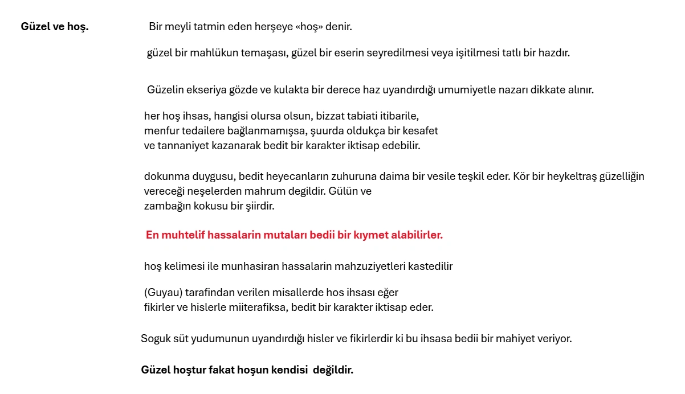
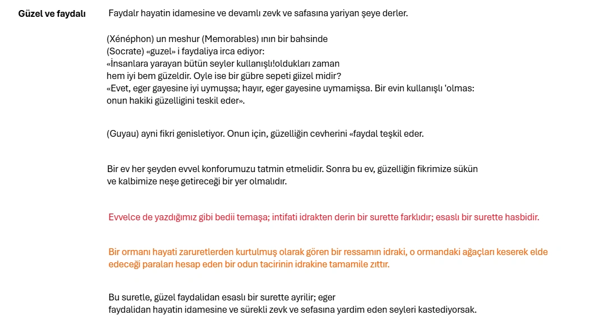
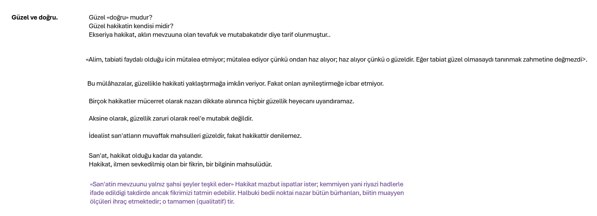
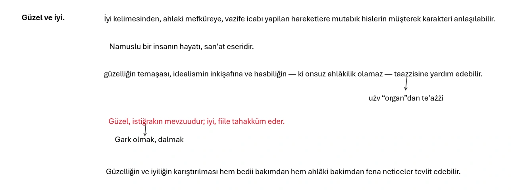

DÖRDÜNCÜ KISIM
Biri tabiatte, diğeri san'atte olmak üzere iki türlü güzellik var.
San'atte güzelliğin ne olduğu anlaşılmadıkça, tabiatteki güzelligin tefriki çok müşküldür.
Sonra, bu da sabittir ki tabiatte güzellik bulmak için bile, önceden san'ate müteallik biraz bilgi sahibi olmak zaruridir.
Tabiat hissi denilen his, yavaş yavaş bilhassa resmin, peyzajını ve edebiyatın tesiri altinda uyanmıştır.
Bir çok ressamlar, edipler, kendilerinden evvel tabiatte sezilmemiş olan güzellikleri, eserleri vasıtasile bize tanıtmışlardır.
Her an, kendimizde ve haricimizde, mevcudiyetinden bile şüphe etmediğimiz yahut müşahede edip te ehemmiyet vermediğimiz binlerce tafsilât keşfediyoruz.
Profesör (Harald Höffding) in dedidiği gibi, harici âlemi idrakimiz bir tahatturdur.
Hassalarla tanılan âleme bir bedii âlem, (W. James) in tabirince bir alt dünya (sous-univers) inzımam (=eklenme, katılma) ediyor.
Eşyanın çehresi onları temaşa edenin kültürü ile değişir.
İngiliz Edibi Oscar Wilde: <<Tabiat, san'ati taklit ediyor>> diyor.
Binaenaleyh «güzel» e bir tarif ararken, gözümüzün önüne, tabiatteki güzeli değil san'atteki güzeli getireceğiz.




GÜZEL HAKKINDA NAZARİYELER
(Aristo) nun nazariyesi. — Aristoya göre güzelliğin başlıca alâmetleri üçtür, bunlar da:
1 — Nizam.
2 — Tenazür ve tenasüp.
3 — Muayyen huduttur.
Güzel ve iyi hakkında riyazi ilimlerin söyliyecek hiçbir şeyi olmadığını iddia edenler aldanıyorlar. Bu mevzu üzerinde en çok söyliyecekleri olan bilâkis bu ilimlerdir, zira onu en iyi ispat edecek olan bunlardır.
«Güzelyin en büyük alâmetleri nizam, tenasüp ve muayyen huduttur.
Yani eşyada veya canlılarda olsun güzelliğin başlıca karakteristik sıfatı bir şeyin bütünü ile parçaları arasında sezilen, görülen riyazi nispettir.
Yoksa göze çarpan manzarası değildir.
Tabiatta intizamsız hiçbir şey yoktur, bizzat tabiat bu intizamın illetidir. (Aristo'ya göre)
Tenasübe gelince: Aristo bununla tam, uygun bir nispeti kasteder.
Aristo iddia ediyor ki, hudutsuz seyleri tanimak imkânsızdır.
onların hududu kafamızın hududunu aşmaktadır.
Böylece güzelliğin bu telâkkisi herşeyden evvel, tenasüp ve büyüklük üzerinde kurulmuş oluyor.
Aristoya göre güzel ve iyi, eşyanın özenli nispetlerinin görünüşleridir.
İyi ile güzelin farkı «birincinin daima aksiyon içerisinde bulunmasından, ikincinin ise hareketsiz eşyada yerleşmiş olmasından ibarettir.»
Hulâsa Aristoya göre (güzel) «Büyüklükle birleşen nizamdir. (=Azamet=Büyüklük olarak tercüme ediyorum.)
Kant'ın nazariyesi
Güzel hakkındaki nazariyelerin en meşhuru Kant'ın nazariyesidir.
Kant, «güzel» i ve ona müteallik bütün meseleleri (Hükmün İntikadı) unvanlı kitabının birinci kısmında mütalea etmektedir.
Bedii hükümleri diğer hükümler gibi, keyfiyet, kemiyet, izafet, cihet noktalarından tetkik ediyor.
Keyfiyet bakımından güzel, hasbi bir mahzuziyetin mevzuudur.
Keyfiyet bakımından güzel, hasbi bir mahzuziyetin mevzuudur.
Bir şey bizde bir alâka uyandırdığı zaman, onu faydalı ve iyi bulduğumuz zaman (bu şey hoştur) diye hükmederiz.
Hoş ve faydalı yahut iyi, arzu etmek melekesine hitap eder.
Bilâkis Kant <<Zevk hükmünü tayin eden mahzuziyet bütün menfaatten aridir. >> der.
Takdirimize ahlaki kanun dahi müdahale etmez; çünkü <<**Ahlakilik bir nizam ister>>.
Demek ki, mütekabilen temellük ve tahakkukku istilzam eden mahsüs eğlenceden ve ahlâkî mahzuriyetten farklı olarak bedii haz, mevzuunun şeniyetine alâkasızlık gösterir.
Ressam, bir meyvayı veya tasvirini san'atkâr gözü ile temaşa eder ve ne onu yemeği, ne de satmağı düşünür.
İşte bütün **menfaatten tecerrüt etmiş** böyle bu **mahzuziyetin mevzuu**na, **güzel** denilir.
Mantıkı hükümlerin külliyetini icap ettiren müdrikenin tasavvurlarıdır.
Müdrikenin kabli tasavvurlarıdır ki mantıki hükümleri her zihin için kü lli, binaenaleyh şey'i hale sokar.
Halbuki bir tasavvurun başka bir deyişle müdrikenin mahsulü olan bir mefhumun bedii bir haz vücude getireceği düşünülmez.
Çünkü bedii haz hassasiyetin bir halidir.'
Tasavvurları vücude getiren müdrike ise hassasiyetten tamamen ayrıdır.
Diger cihetten bedi; hükümler mantıki hükümlere irca edilecek olsa o halde . hükmün ilim gayesine hadim olması iktiza eder, bu halde güzellikte hasbilik ve hürriyet kalmaz»
Keza ahlaki hükümler kiilli bir mahiyete maliktirler:
Bedit hüküm ise, kendisine hiçbir umumi fikir müdahale etmeksizin geliyor.
(Külli olarak tasavvursuz hoşa giden şey güzeldir.)
Güzel hakkındaki nazariyelerin en meşhuru Kant'ın nazariyesidir. Kant, «güzel» i ve ona müteallik bütün meseleleri (Hükmün İntikadı) unvanlı kitabının birinci kısmında mütalea etmektedir.
Bedii hükümleri diğer hükümler gibi, keyfiyet, kemiyet, izafet, cihet noktalarından tetkik ediyor.
Güzel hakkındaki nazariyelerin en meşhuru Kant'ın nazariyesidir. Kant, «güzel» i ve ona müteallik bütün meseleleri (Hükmün İntikadı) unvanlı kitabının birinci kısmında mütalea etmektedir.
Bedii hükümleri diğer hükümler gibi, keyfiyet, kemiyet, izafet, cihet noktalarından tetkik ediyor.
1-Keyfiyet Cihetinden Güzel:
Keyfiyet bakımından güzel, hasbi bir mahzuziyetin mevzuudur.
Bir şey bizde bir alâka uyandırdığı zaman, onu faydalı ve iyi bulduğumuz zaman (bu şey hoştur) diye hükmederiz.
Hoş ve faydalı yahut iyi, arzu etmek melekesine hitap eder.
Bilâkis Kant <<Zevk hükmünü tayin eden mahzuziyet bütün menfaatten aridir. >> der.
Takdirimize ahlaki kanun dahi müdahale etmez; çünkü <<Ahlakilik bir nizam ister>>.
Demek ki, mütekabilen temellük ve tahakkukku istilzam eden mahsüs eğlenceden ve ahlâkî mahzuriyetten farklı olarak bedit haz, mevzuunun şeniyetine alâkasızlık gösterir.
Ressam, bir meyvayı veya tasvirini san'atkâr gözü ile temaşa eder ve ne onu yemeği, ne de satmağı düşünür.
İşte bütün menfaatten tecerrüt etmiş böyle bu mahzuziyetin mevzuuna, güzel denilir.
2-Kemiyet Cihetinden Güzel:
Kemiyet bakimindan giizel, alemşümul bir mahzuziyetin mevzuudur.
Bir seyde hasbi bir mahzuziyet bulan bir kimse, ayni seyin herkes için müşabih bir mahzuziyet membaı olması lazim geldiğine hüküm vermekten kendisini menedemez.
İşte bu cihetten, giizel hostan bariz bir surette ayrılır.
Fakat diger bazı hükümler de umumi mutavaati istilzam ederler.
Ahlaki hükümler kiilli bir mahiyete maliktirler. «Her insan vazifesini yapmağa mecburdur.»
Fakat burada dahi, umumi fikir, vazife tasavvuru müdahale ediyor.
Bedii hüküm ise, kendisine hiçbir umumi fikir müdahale etmeksizin geliyor. Bunları söyledikten sonra şu tarifi yapabiliriz: <<Külli olarak tasavvursuz hoşa giden şey güzeldir.>>
3- İzafet Cihetinden Güzel:
İzafet bakimindan «güzel> gayesiz bir ahenkle, yahut daha mihaniki bir tabir kullanirsak, gayesiz bir gaiyetle tavsif olunur.
Güzellik eşyanin şekline aittir.
Resim bütün plastik san'atların esasidir; halbuki bizzat şeklile hoşa gidiyor.
Ameli hayatta, akli bir nizam oldugu zaman bir gaye vardir.
Halbuki güzellikte de ahenk, gaiyet vardir; fakat gaye yoktur, hedef yoktur.
Hedef fayda ve kemal olabilirdi; fakat bedii hüküm hasbidir.
Nebatat mütehassist çiçeğin gayesini bilir; bilir ki bu, nebatlarin telkih uzvudur.
Kant, bu mülahazalardan «güzel» in bu üçüncü tarifini çıkarıyor.
«Muayyen bir gaye tasavvur etmeksizin bir şeydeki gaiyetin ahengin suretini idrak etmektir».
4-Cihet bakımından :
Cihet bakımından «güzel» zaruri bir mahzuziyetin mevzuudur.
Birisi bir seye güzeldir dedi mi, diğer birisinin de ayni fikirde bulunmağa mecbur olmasını ve güzeldir demesini ister; diğer bir mütaleada bulunmasına müsaade etmez.
Bir hissin böyle kiilli olarak kabul edilmesi hassası bir «müşterek his (sens commun)» istilzam eder.
Zevk hükmünde külli rızanın zarureti, müşterek his faraziyesi altında afaki olarak tasavvur edilen enfüsi zarurettir.
Kant bu dördüncü tarife varıyor: Güzel «Zaruri bir mahzuziyetin mevzuu olarak tasavvursuz tanılan» şeydir.
Kant güzellikte, hassasiyetle muhayyilenin ahengini, bedii mahzuziyetin fikrî mahzuziyetle olan ittihadını buluyor.
Gerçekten güzel, hasbi bir mahzuziyetin mevzuudur.
Güzellikte ameli gayesiz bir nizam, gayesiz bir gaiyet vardır.
Bilhassa güzellik, hassasiyetin, muhayyilenin ve müdrikenin hayret veren bir ahengini tahakkuk ettirebiliyor.
Kabli mütâlardan güzelliğin mahiyetini çıkarmağa çalışan bu usul müşahedeye müstenit tecrübi ve ruhi bir estetik istiyen bazı mütefekkirlere çok metafizik görünüyor.
Kant, insandan insana değişen hazzın enfüsiliğini, ittifakla takdir edilmesi lazimgelen (Güzel) in külliyetine karşı koruyor.
Halbuki muhtelif insanların hassasiyet bünyesi biribirine çok benzer, Bilâkis bedii şuur fertten ferde değişen mûdil fikri mutâlardan neşet ediyor.
Bunlar da gösteriyor ki bedii hükümler, külli ve zaruri değildir.
İçtimat ve tarihi estetik güzelliğin muhitlere ve zamanlara, alınan terbiye ve kültüre göre değiştiğini gösterdi. Hiçbir zaman külliyet ve zaruret «güzel» in asli vasiflarından degildir.
Ahenkli bir tablo seyircilerin nazarı dikkatine carpar, ifadeler asil hayallerle, yüksek fikirlerle, alicenap heyecanlarla fikri ve kalbi zenginleştirir.
Tabiatta da giizellik insan üzerindeki bir san'at eseri gibi — bazan renklerin kesafeti, çizgilerin intizamı, sedaların parlaklığı, ve daima ahenkle — icrayi tesir eder. Bizde hasbi bir istiğrak haleti uyandırır.
Ahenk zaruridir, fakat kâfi değildir. Güzellik heyecanının doğması, mahlükun, seyin, manzaranın muvaffak - bir san'at eseri gibi, muti olmuş şuurumuza yeni fikirler ve orijinal heyecanlar getirmesile kabildir.
Güzel, ayni zamanda fiziki hassasiyeti, zekâyı ve yüksek temayülleri tatmin eder.
Güzel, hasselerin, fikrin, kalbin beraberce tatmin edildiği ve muhtelif hazlar arasında samimi bir hulül olduğu nispette tamdır.
Güzeli, ahenk ve ifadenin birleşmesine irca eden tez bütün vakralara çok mutabık görünüyor. Bundan başka, güzelliğin beraber getirdiği müstesna neşeyi de izah ediyor. Şuurumuz daima birlik emelini besler; ahenkte husule gelen her mecburiyet bizi muztarip eder.
Güzel, alelâde, hasselerin hazzını, kalbin ve zekânın mahzuziyetlerine birleştirir.
Bütün melekelerimizin bu muntazam oyununu vücude getirerek ve bu batıni ahengi tahakkuk ettirerek bize neşe verir.
Bütün insanlar ayni hars, ayni tecrübe, ayni hissi temayüllere malik olmadiklarindan san’atin ve tabiatin karşisinda ayni surette ihtizaza gelemezler.
Birini düşündüren digerini düşündürmez; birini müteessir eden digerini lakayt birakir.
San'atin bütün yüksek sekillerine bir nüfuz zaruridir.
Hissi tehalüfler dahi güzelligi anlamanin ve sevmenin tarzina degisiklikler getirir.
Bununla beraber, muhtelif insanlarin bedii heyecanlarr arasinda bir silsile tesis edebiliriz; çünkü selahiyet farkları vardir.
En yüksek güzellik, en mükemmel güzellik, belki bize, mahlükat ve esyanin gayri mahdut âlemi ile karabetimizi ifşa eden ve âlemşümul hayatin bütün safhalarının ayni zamanda hem orijinalitesini ve hem gizli kardesligini bize hassettiren güzelliktir.
Boylece san’at, dini bir mahiyet iktisap ediyor.